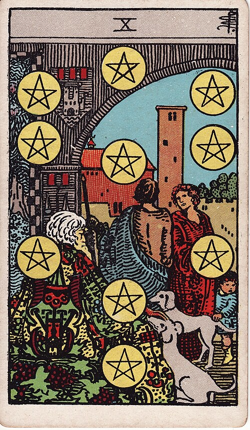

| Arcana | Minor |
| Suit | Pentacles |
| Element | Earth |
| Attribution | Mercury in Virgo |
Ten of Pentacles
In shortThink in decades, not quarters.
Upright
This is wealth that outlasts you — family security, inheritance, a business that endures, a foundation laid for people who come after. It is the most settled card in the deck: not exciting, deeply solid. Decisions here should be made on a ten-year view.
Reversed
There are cracks in the structure. Money conflict inside a family, an inheritance that is more burden than gift, short-term choices undermining long-term stability, or the question of whether you want what is being handed down at all.
The turn
Make the decision that serves ten years from now, not this quarter.
Reading with your own deck?
Sage records the cards you actually pull, writes the reading, keeps every one, and shows you what keeps returning across them. Free, private, no account.